01スタッフ
写真とひと言で、
1分で報告できる。
日報のひな形があるから、何を書けばいいか迷いません。現場の写真や動画も、その場で撮ってそのまま添付。LINEに慣れていれば、すぐに使えます。
- 日報のひな形を会社ごとに設定
- 写真・動画をその場で添付
- 「日報」「つぶやき」「サンクスカード」を選んで投稿
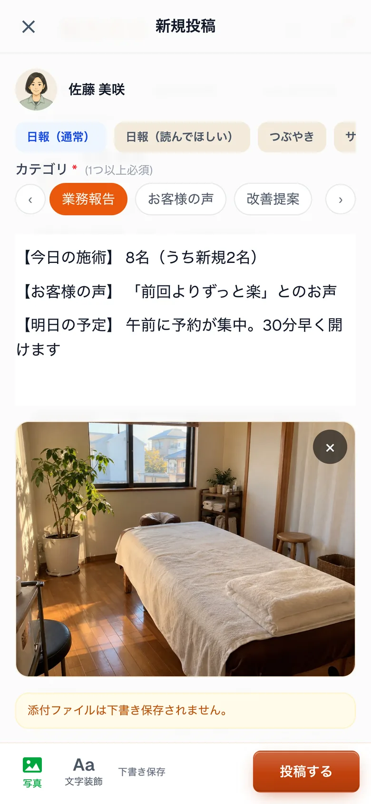
店舗・現場をもつ経営者のための“現場報告アプリ”
スタッフが写真とひと言で、今日の現場を報告。
離れていても店舗の様子がわかるから、
安心して現場を任せられます。
「画面を見てみたい」だけでもOK。
しつこい営業はしません。
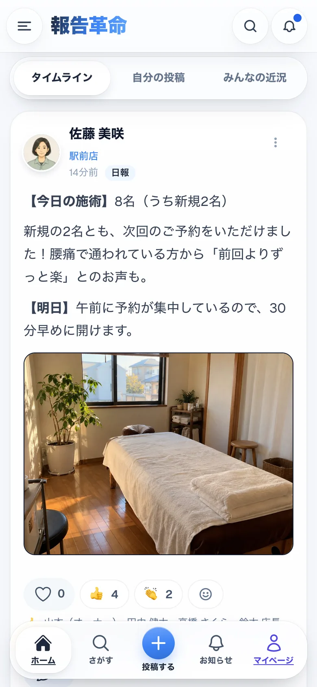
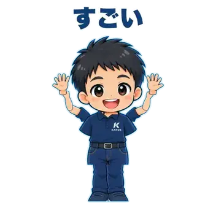
現場のある会社で、使われています
ハウスクリーニング事業者での実績（2026年9月時点）
こんなこと、ありませんか？
それは、スタッフのせいでも、
あなたが心配性だからでもありません。
現場から、情報が
上がってくる“仕組み”が、
まだないだけです。
カメラに映るのは“様子”だけ。お客様の反応や、スタッフが気づいたことまでは映りません。
本当に知りたいのは、現場にいる人の「ひと言」のはずです。
「LINEで報告してもらえばいい」
と思っていませんか？
LINEグループで報告すると…
報告革命なら
必要なのは、もっと気軽に報告できて、ちゃんと届く場所。
そんなシステムが、
報告革命です。
“社内SNS”と聞くと、
難しそうに感じるかもしれません
やることは「写真を撮って、ひと言書く」だけ。
スタッフは報告し、経営者は読んで返事をする。それだけで、離れた現場とつながります。
できること
01スタッフ
日報のひな形があるから、何を書けばいいか迷いません。現場の写真や動画も、その場で撮ってそのまま添付。LINEに慣れていれば、すぐに使えます。

02経営者
各店舗・各現場の報告が、写真つきで時系列に届きます。移動中でも、自宅でも、スマホでさっと確認。監視カメラでは見えない「お客様の反応」や「スタッフの気づき」まで伝わります。
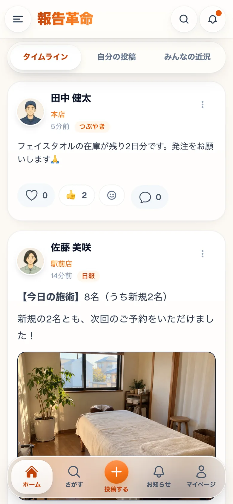
03返事
忙しいときは、スタンプをタップするだけ。報告に反応が返ってくるから、スタッフは「ちゃんと見てもらえている」と感じ、次も報告したくなります。報告が増えるほど、現場はもっと見えるようになります。
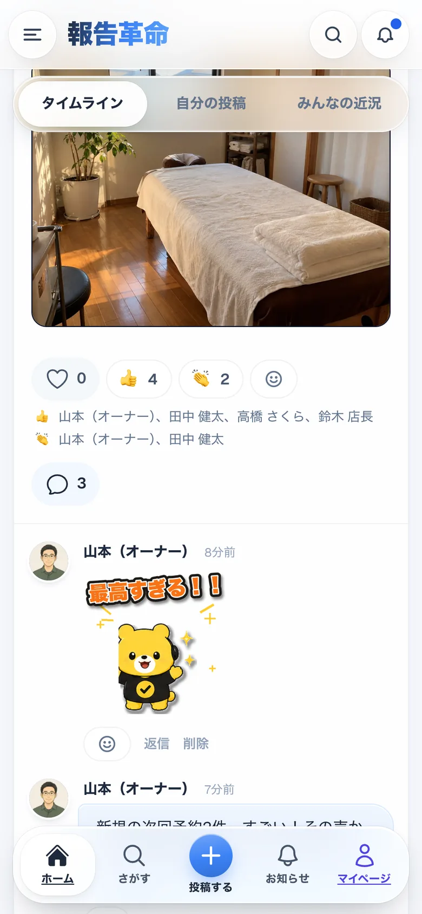
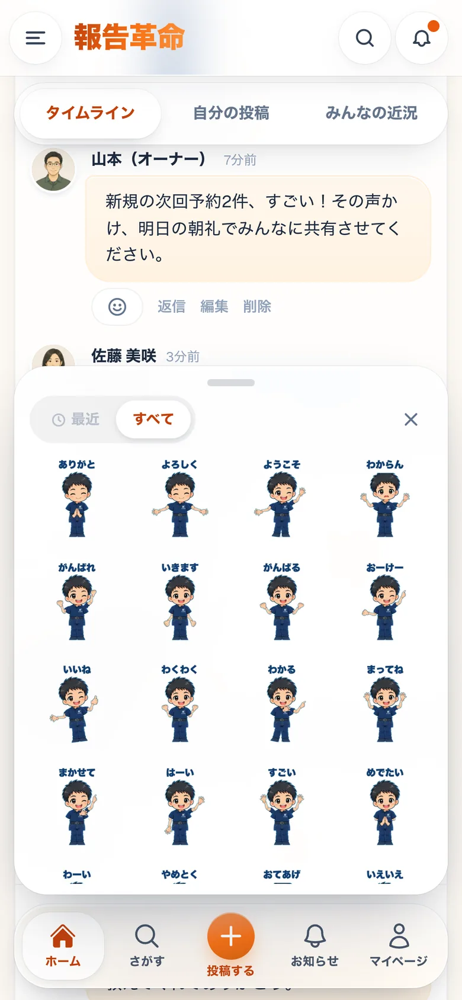
04見える化
投稿数やもらったメダル、サンクスカードの数は、ランキングで確認できます。よく報告してくれるスタッフに気づけて、頑張りをきちんと評価できます。
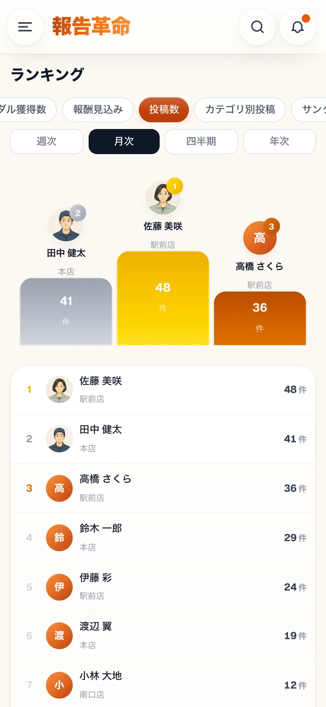
画面はすべて架空のデータを使った表示例です。
報告が増えると、経営が変わる
売上の数字だけでは見えない、お客様の反応やスタッフの気づきが毎日届きます。
在庫切れ、クレームの芽、人手が足りないサイン。早く気づけるから、先に手を打てます。
状況がわかっているから、口を出しすぎずに済む。カメラを見ていた時間を、経営の時間に。
見えなかった工夫や気配りに「ありがとう」を返せる。認められる職場づくりにつながります。
業種別の使い方
整体・サロン・美容室から、ハウスクリーニング、リペア、飲食店まで。
スタッフに現場を任せている業種ほど、報告革命が役に立ちます。
整体・マッサージ
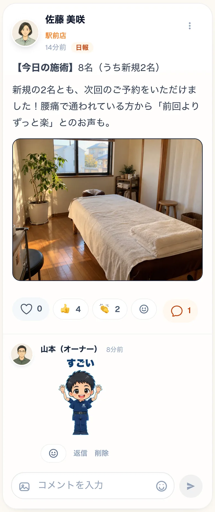
ネイルサロン
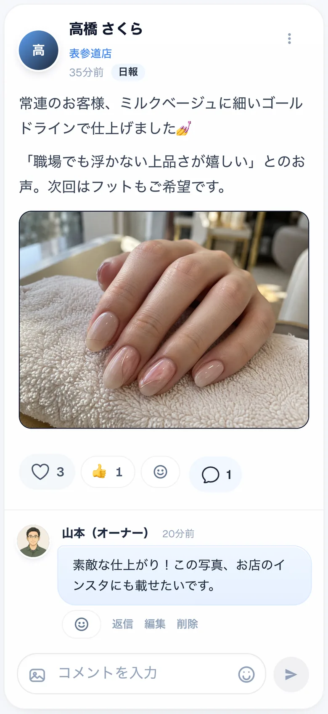
美容室
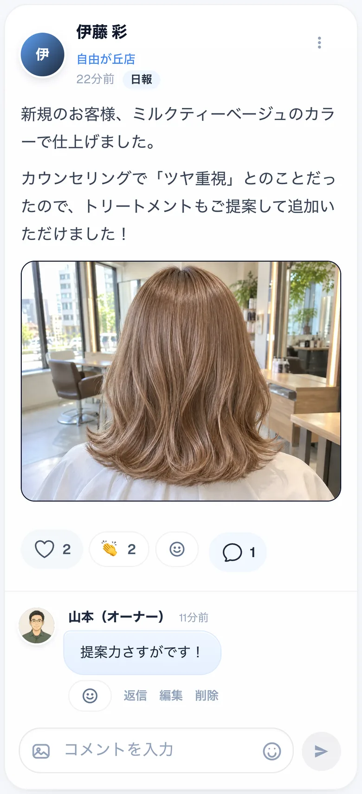
ハウスクリーニング
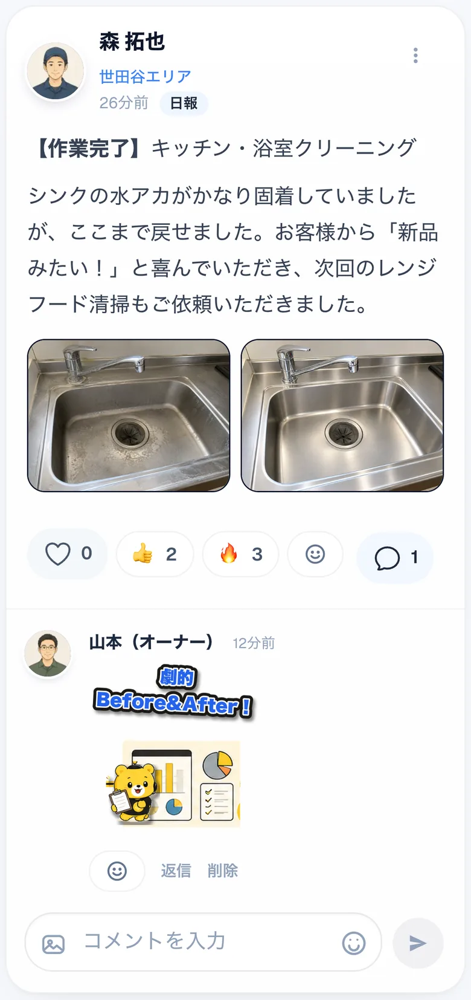
リペア
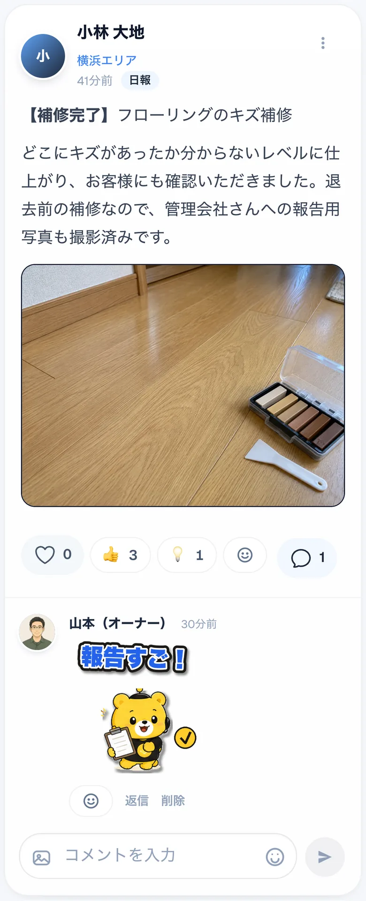
飲食店
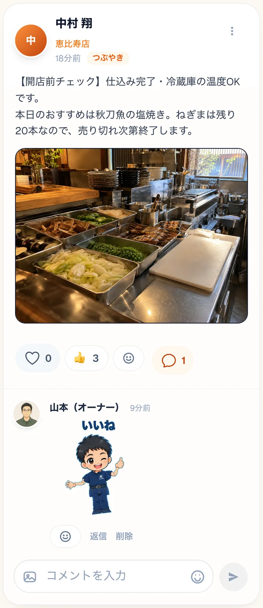
画面はすべて架空のデータを使った表示例です。
iPhone・Androidアプリ
スタッフ一人ひとりにパソコンがなくても大丈夫。いつも使っている自分のスマホに、アプリを入れるだけで使えます。
ご利用には、導入企業から発行されるアカウントが必要です。導入のご相談はLINEからどうぞ。
料金
1アカウントあたり
月額550円
税込・1日あたり約18円
初期費用・契約条件は、LINEでお気軽にお問い合わせください。
はじめ方
「画面を見てみたい」「料金を知りたい」など、ひと言メッセージを送ってください。
無料のオンラインデモ（30分）で、御社の業態に合わせた使い方をご紹介します。
招待メールを送るだけ。最初の投稿・返事の仕方まで、立ち上げをサポートします。
よくあるご質問
はい。投稿・確認・返事まで、すべてスマホだけで使えます。iPhone・Androidのアプリがあり、パソコンのブラウザからも利用できます。
写真を撮って、ひと言書いて、投稿するだけです。日報のひな形も用意できるので、書くことに迷いません。LINEを使えている方なら、すぐに慣れていただけます。
はい。仕事用のアカウントで使うので、個人のLINEや電話番号を交換する必要はありません。プライベートと仕事の連絡を分けられます。
報告革命は、見張るためではなく「頑張りに気づいて、返事をする」ための仕組みです。スタンプやコメント、サンクスカードで、報告するほど認められる場所になります。導入時の伝え方もご相談ください。
はい。5名から22名の会社でご利用いただいています（2026年9月時点）。料金は使う人数分だけなので、小さなお店でも始めやすくなっています。
使えます。短い投稿でも参加できるので、雇用形態を問わず、現場の気づきや感謝を共有できます。
しつこい営業は行いません。「まず画面だけ見たい」「料金だけ知りたい」といったご相談も歓迎です。
お問い合わせ
LINEで「画面を見たい」と送るだけ。
御社の業態や人数に合わせて、使い方をご案内します。
ご相談・デモは無料です。しつこい営業はしません。
パソコンでご覧の方は
スマホで読み取ってください